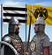
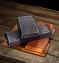
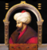
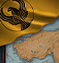

欧陆风云4
ParaWikis
Notice
: Undefined index: HTTP_ACCEPT_LANGUAGE in
/www/sites/eu4cn.com/index/skins/Liberty/LibertyTemplate.php
on line
186
最新百科
都市天际线2百科
英雄无敌3百科
维多利亚3百科
奇妙探险队2百科
罪恶帝国百科
英白拉多：罗马百科
热门百科
群星百科
欧陆风云4百科
十字军之王2百科
十字军之王3百科
钢铁雄心4百科
维多利亚2百科
ParaWikis
申请建站
ParaWikis
ParaCommons
最近更改
随机页面
加入QQ群
工具
链入页面
相关更改
特殊页面
可打印版本
固定链接
页面信息
页面值
帮助
譯名手冊
字詞轉換
編輯指南
編輯規範
練手沙盒
ParaTranz
52PCGame
资助我们
×
欢迎访问欧陆风云4百科！
注册一个账号
，一起参与编写吧！这里是
当前的工程
。
如果您想帮助本站建设，欢迎点击
这里
捐款！欢迎所有对百科感兴趣的同学加入QQ群：
497888338
。
阅读
查看源代码
查看历史
讨论
特拉比松任务
本页面适用于
最新的版本
(1.37)。
只适用于DLC
变革之风
激活时。
这是
特拉比松
的全部
任务
列表。
[1]
特拉比松任务

哥特人与罗马人
收复佩拉蒂亚
垄断黑海
经济振兴

哈尔迪亚专制公
皇帝的军团
土库曼问题
拉丁纽带
加强防御
特拉比松之傲

蔑视奥斯曼

重夺本都
为曼齐刻尔复仇
复仇进军
科穆宁复兴
伊比利亚人的皇帝
格鲁吉亚联合
希腊人回迁
神圣的建筑
解放奇里乞亚
十字军的遗产
高加索诸国
惩罚游牧部族
寻求宗教支持
特拉比松的都主教
参考资料
↑
脚本代码位于：
/Europa Universalis IV/missions/WOC_Trapezunite_Missions.txt
。
×
登录
密码
记住登录
加入欧陆风云4百科
忘记密码？
其他方式登录
 特拉比松的全部任务列表。[1]
特拉比松的全部任务列表。[1]